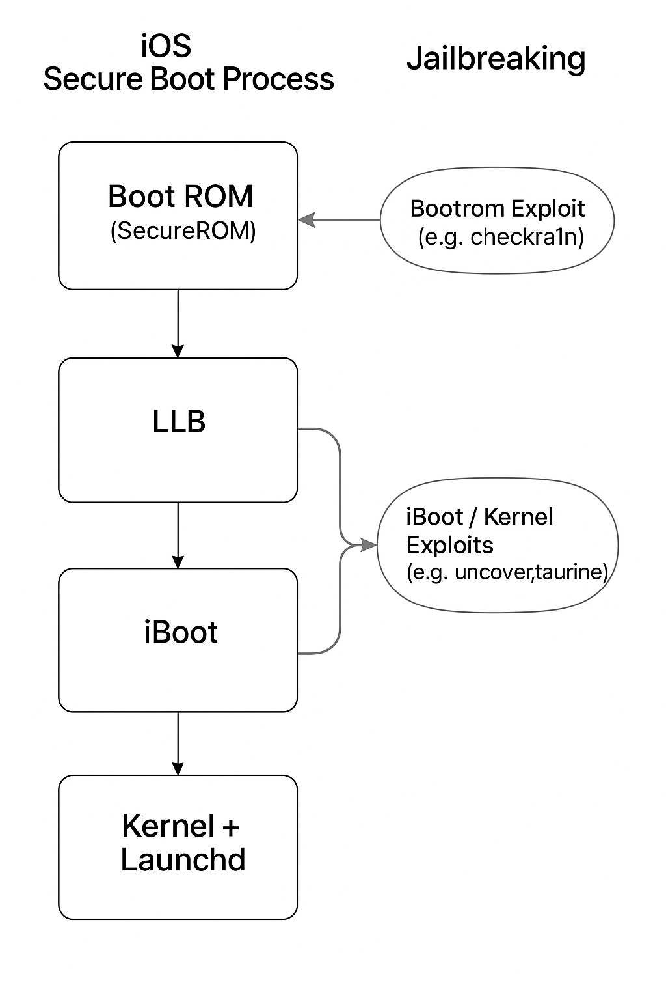

This diagram illustrates the secure boot chain in iOS devices and where various jailbreak methods like checkm8 and checkra1n can intervene.

One of the most powerful tools in iOS reverse engineering is dumping a decrypted .ipa from a running app using Frida.
This process is essential for analyzing apps downloaded from the App Store.
iOS apps from the App Store are encrypted with Apple’s FairPlay DRM. Even if you manage to extract the app files from your device, the binary remains encrypted and unreadable to reverse engineering tools like Ghidra, Hopper, or IDA.
To reverse engineer or analyze an iOS app, you need access to the app’s decrypted binary. Since iOS automatically decrypts the app in memory when it runs, this gives us a perfect opportunity to intercept it.
Frida to attach to the app's process while it's running.ipa or .app fileOnce saved, you can open the dumped binary with your favorite reverse engineering tools.